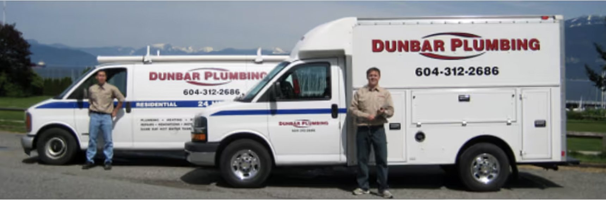
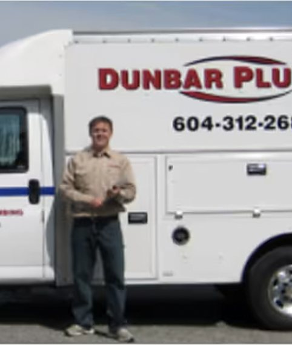

Dunbar Plumbing · Vancouver's West Side · Since 2002
Always in the neighbourhood.
Family-run plumbers for Dunbar, Kitsilano, Point Grey and Kerrisdale. Call before noon on a weekday and we are usually there the same day. No travel time charges.
- 5.0 Google · 32 reviews
- A+ BBB accredited
- Licensed, bonded, insured

- 5.0Google rating, 32 reviews
- A+BBB accredited business
- 2002Serving the West Side since
- Licensedbonded and insured
- WorkSafeBCapproved, certified tradesmen
What we fix, replace and renovate
Residential plumbing for houses, suites and small buildings on the West Side. Pick the one that sounds like your problem.
Fix it
Something is dripping, blocked or not working.
Plugged and slow drains
Sink gurgles, tub drains slowly, water backs up.
What we do→Leaks and pipe repairs
A drip under the sink, a damp ceiling, a pinhole in a copper line.
What we do→Toilet repairs and replacement
Running, rocking, slow to flush or leaking at the base.
What we do→Garburators
Humming, jammed, leaking underneath, or you want it gone.
What we do→Replace it
Worn-out fixtures and pipes, done properly.
Faucets, taps and fixtures
Dripping tap, stiff handle, a shower that will not hold its temperature.
What we do→Hot water tanks and tankless
No hot water, lukewarm showers, or a puddle around the tank.
What we do→Pipe replacement and repiping
Rusty water, low pressure, repeated leaks, or a collapsed waste line.
What we do→Renovate
The plumbing side of a new bathroom.
Something leaking right now?
Call us on a weekday before noon and we are usually there the same day. Hours are Monday to Friday, 8:30 a.m. to 5 p.m.. Outside hours, leave a message or text and we call back first thing.
Why the West Side keeps calling us back
No travel time charges
We are based on the West Side and always in the neighbourhood, so you are never billed for the drive.
The same two plumbers, every time
Ken started the company in 2002 and his son Dexter works alongside him. You get a name, not a dispatcher.
Old houses are our specialty
Twenty-plus years inside Dunbar, Kits and Point Grey homes means we know what is behind the wall before we open it.
How a visit works
No dispatcher, no call centre. The person you speak to is the person who shows up.
- 1
Call or send a request
Tell us what is going on. If you can, text a photo of the problem to the same number.
- 2
We give you a time window
Weekday calls before noon can usually be fitted in the same day. We confirm by phone or text.
- 3
The plumber arrives, stocked
Ken or Dexter arrives in the window with a fully stocked truck, so most jobs finish on the first visit.
- 4
Fixed, tested and cleaned up
We test the repair, clean the work area and explain what we did. No travel time charges on the bill.
What customers say
Called at 9 am and Dexter was here to fix my kitchen sink clog by 10 am. His courtesy, efficiency, professionalism and very reasonable rate only confirmed I'd made the right choice. If you reside on this side of the city you should call Dunbar Plumbing first.
I've hired Dunbar Plumbing to replace my 1920's laundry faucets and a 1990's toilet, fix a leak and unclog a slow drain. They communicate very well, arrive promptly, do an impeccable job, clean up, and are delightful to deal with. Dependable every time.
Absolutely terrific in replacing the waste water pipe in our 100 year-old house. Having located the collapsed old pipe, they found a creative solution that negated the necessity of digging up the thick concrete slab. They had a clear plan, executed it on time and on budget.
Kenny and Dexter always arrive right on time, diagnose the issue quickly, and get straight to work without trying to upsell on unnecessary parts. The final price was completely reasonable with no hidden fees or travel surcharges.
We have used Dunbar Plumbing for decades and have always been very pleased with their service, pricing and ability to come when the situation is urgent. Repiping, tankless hot water, clogged drains snaked out, and faucets and toilets installed over the years.
I've used Dunbar Plumbing for a few years now. Timely, fair price and good with problem solving old Vancouver plumbing.
Where we work
Based in Dunbar, serving the West Side of Vancouver only. That is why we can be there fast and why there is no travel charge.
- Dunbar–Southlands
Home base. 1920s to 1950s houses with original cast iron, clay drain tile and galvanized supply lines. We are usually a few blocks away.
- West Point Grey
Character houses and view homes with long drain runs. Slow drains and hose bibs that split in cold snaps are the common calls.
- Kitsilano
Converted character houses, suites and small multi-family buildings. We have looked after Kits homes and rental buildings for over twenty years.
- Kerrisdale
Larger older homes with finished basements, where a small leak can do a lot of damage. Repiping and hot water tanks are frequent jobs here.
- Arbutus Ridge and Shaughnessy
Big houses, big bathrooms and plenty of renovation work. We handle the plumbing side alongside your contractor.
- UBC and the University Endowment Lands
A mix of 1950s houses and newer builds. Fixture replacements and water heater swaps make up most of our calls.

About us
Ken, Dexter, and two well-stocked trucks.
Ken MacDonald started Dunbar Plumbing in 2002 to look after the houses around him on the West Side. His son Dexter works alongside him now. Between them they have been inside more Dunbar, Kitsilano and Point Grey basements than almost anyone, which is why customers say they know what is behind the wall before it is opened.
We are licensed, bonded and insured. Our plumbers are certified tradesmen and WorkSafeBC approved. Dunbar Plumbing Ltd. has been a BBB Accredited Business with an A+ rating since 2023.
We also look after small commercial spaces and multi-family buildings in Kitsilano for owners who want one plumber who knows the building.
- Licensed bonded and insured
- WorkSafeBC approved
- BBB A+ accredited since 2023
- Since 2002 on the West Side
- No travel time charges
Questions people ask us
How fast can you get here?
Call before noon on a weekday and we can usually be there the same day. Our hours are Monday to Friday, 8:30 a.m. to 5 p.m. Outside those hours, leave a message or text and we call back first thing.
Do you charge for travel time?
No. We are based in Dunbar and serve the West Side only, so there are no travel time charges on your bill.
Are you licensed and insured?
Yes. Dunbar Plumbing Ltd. is licensed, bonded and insured, our plumbers are certified tradesmen, and we are WorkSafeBC approved. We have been a BBB Accredited Business with an A+ rating since 2023.
Which neighbourhoods do you serve?
Dunbar, Southlands, West Point Grey, Kitsilano, Kerrisdale, Arbutus Ridge, Shaughnessy and the UBC area. See the areas page for details.
How do you charge?
You will know what the work costs before we start. There are no travel time charges, no hidden fees and no after-hours premiums because we do not work after hours. Payment is settled when the job is done.
Do you work on older houses?
That is most of what we do. Many of our customers live in homes built between 1910 and 1960, and we carry the fittings those houses need.
Do you do commercial or multi-family work?
Yes, for small commercial spaces and multi-family buildings on the West Side, particularly in Kitsilano.
Request a visit
Tell us what is going on and we will call or text you back with a time. For anything urgent, the phone is faster.
(604) 312-2686
Mon–Fri 8:30 a.m.–5 p.m.